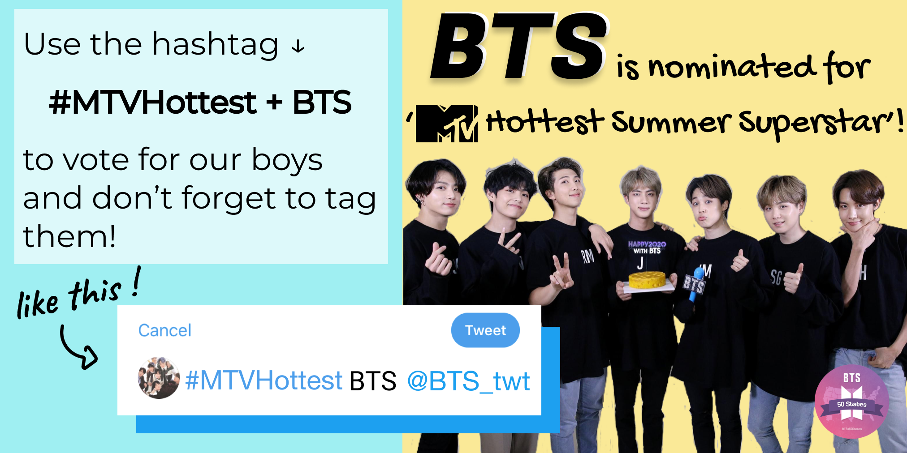

evelynne lee
BTSx50States - Designer
BTS, the Korean boy band comprised of 7 members have taken the world by storm with their inspiring music, powerful yet graceful dance,
and the messages they spread continuially through their lyrics and words. I have been a fan of BTS since 2016 and I wanted to be a part of something meaningful in this large community of fans.
BTSx50States is a promotional BTS fanbase run entirely by volunteer ARMYs (name of BTS fans) in order to promote BTS across the United States. Early 2020 I joined the team in hopes
to help create stunning and informative infographics to help spread knowledge about streaming and buying and help promote BTS year round. I have also created other graphics that help to showoff some
of the many acheivements and milestones BTS have and continue to achieve.
BTS @ the 2020 62nd Annual Grammy Awards. Picture by Steve Granitz. I do not own this picture.
Below are some graphics I have created
Note: These are all designed for Twitter and Instagram posts
*sizing according to respective platforms
Educational Posters
Streaming Guides:
Goal: Educate ARMYs on different platforms for streaming music to help get BTS rank higher on the billboard Hot100 charts!
“Streaming is the most dominant factor on the chart, followed by radio airplay and digital sales in descending order of significance”
Platform - Deezer
Platform - Youtube
Voting Reminder/Guide
Goal: Instructions on how to correctly submit a Twitter vote to help BTS win the MTV Hottest Summer Superstar Award
Achievement Posters
Goal: Create Twitter/Instagram post graphics to recognize BTS milestones, awards, and achievements!
Recruiting Posters
Goal: Create Twitter post graphic to rectuit admins for a specific region!